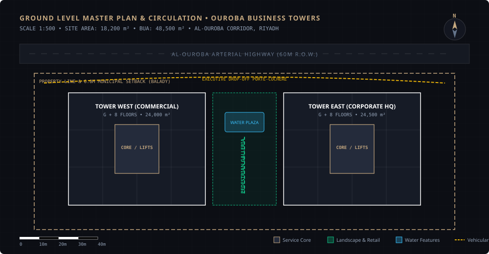
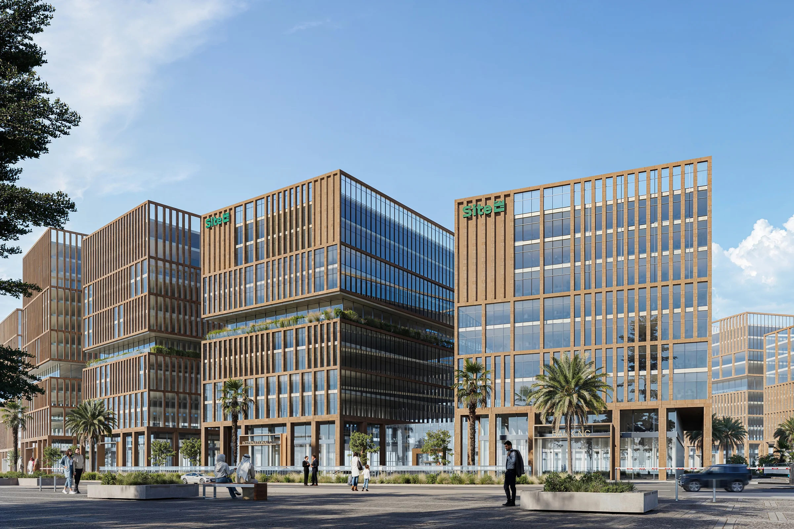

PLATE 01 / 23
Ouroba Business Towers

| Typology | Commercial Office Campus & Retail Arcade |
| Site Area | 18,200 m² |
| Built-Up Area | 48,500 m² |
| Height & Levels | G + 8 Office Floors + 2 Basements |
| Project Role | Architectural Concept, Facade Design, BIM LOD 350 |
| Code Compliance | SBC 201 Architectural / SBC 801 Fire Safety |
| Status | Planning & Municipal Permitting Approvals |
Positioned strategically along the high-velocity Al-Ouroba corridor in Riyadh, this corporate campus redefines commercial density through bioclimatic orientation. The massing configuration splits into two mid-rise geometric towers connected by an urban plinth and landscaped central pedestrian promenade.
The exterior envelope utilizes fluted natural Riyadh limestone contrasted with high-performance double-glazed Low-E curtain walls. Integrated horizontal louvers are calibrated to Riyadh’s extreme solar azimuth angles, mitigating midday solar heat gain while opening expansive northward light into the open-plan corporate plates.
Figure 1.1 • Vector Concept & Massing Morphogenesis
1:500 Analytical

Figure 1.2 • Master Ground Plan & Spatial Circulation
Graphic Scale & North Arrow

